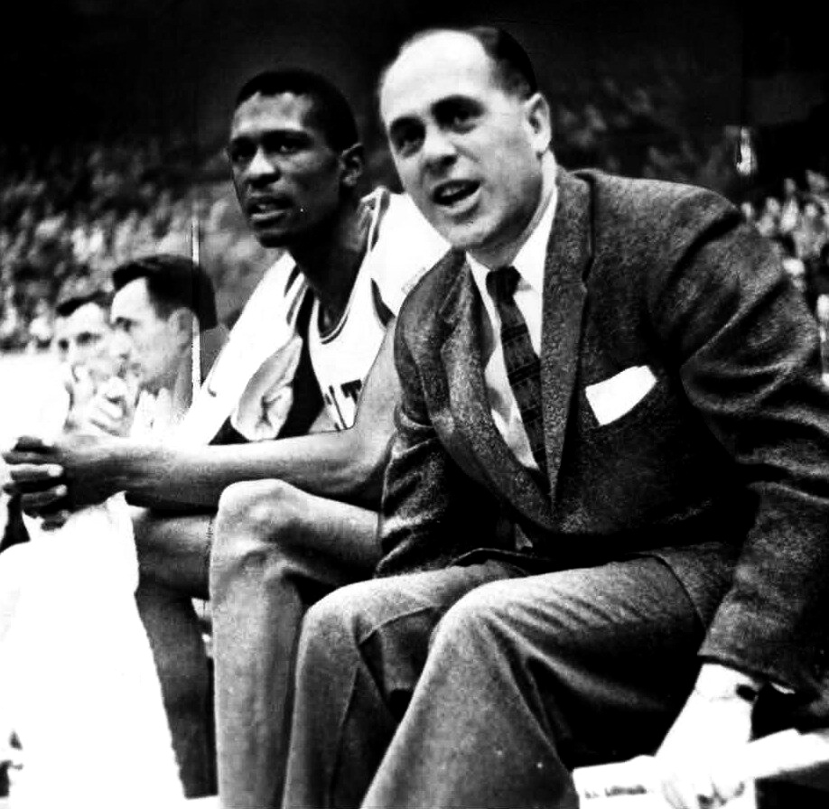
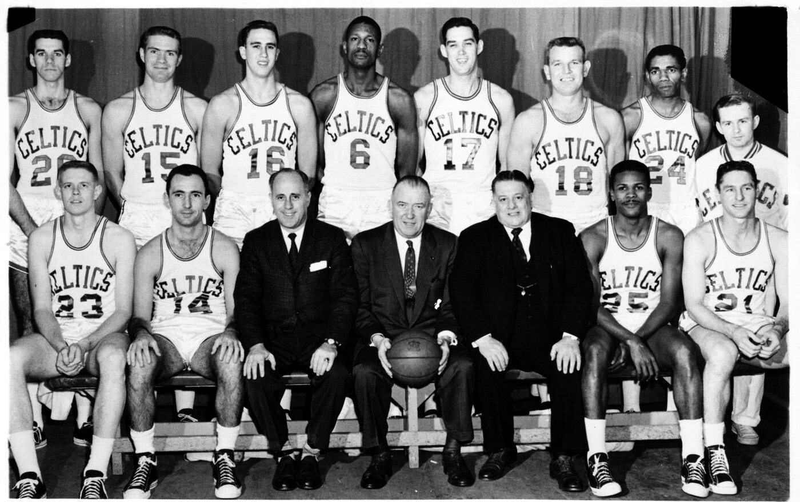

26/12/1956 · FOTO: JACK O'CONNELL / THE SPORTING NEWS · DOMINIO PÚBLICO
RED AUERBACH
BOSTON CELTICS · 1956
FRANK RAMSEY
CELTICS · 1954-1964

RAMSEY
BOSTON CELTICS, CAMPEONES DE 1959-60 · AUTOR DESCONOCIDO · DOMINIO PÚBLICO
JOHN HAVLICEK
CELTICS · AÑOS 60
6
FOTOS: JACK O'CONNELL / THE SPORTING NEWS Y AUTORES DESCONOCIDOS
(DOMINIO PÚBLICO), VÍA WIKIMEDIA COMMONS · PIZARRA, ANILLOS Y TROFEO: RECREACIÓN